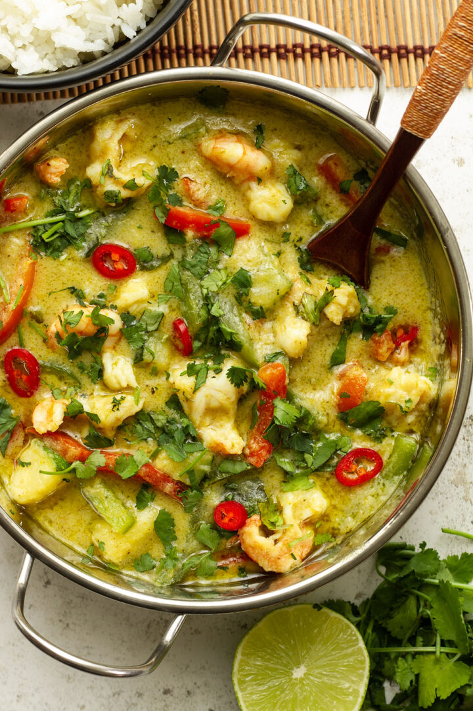

Thai Green Curry Prawns

Spiced Thai Green Curry With Hearty Prawns
Prawn Curry with coriander, ginger, garlic, green chile peppers. The paste will keep in the fridge for up to 4 months! Serve immediately over fluffy jasmine rice.
Ingredients
- 1/2teaspoon ground cumin
- 1 ½ teaspoons ground coriander
- 1 tablespoon minced fresh ginger root
- 4 teaspoons minced garlic
- 2 green chile peppers, chopped
- 3 stalks lemon grass, minced
- 1/3 cup chopped fresh cilantro
- 2 limes, juiced
- 1 lime, zested
- 2 tablespoons corn oil
- 1/4 cup corn oil
- 1/2 pound fresh green beans, trimmed
- 1 (7 ounce) can baby corn, drained
- 1 tablespoon soy sauce
- 1 (14 ounce) can coconut milk
- 1 pound peeled and deveined medium shrimp (30-40 per pound)
Steps
- Place cumin, coriander, ginger, garlic, green chile peppers, lemon grass, cilantro, lime juice, lime zest, and 2 tablespoons of corn oil in a food processor. Blend to a smooth, thick paste. Set aside.
- Heat 1/4 cup of corn oil in a large skillet over medium-high heat. Cook and stir green beans and baby corn for about 30 seconds.
- Stir in the paste, soy sauce, and coconut milk and bring to a boil. Reduce heat to medium and simmer for 5 to 7 minutes, then add the shrimp.
- Cook the shrimp until they are bright pink on the outside and the meat is no longer transparent in the center, 3 to 5 minutes. If the sauce becomes too thick, stir in some water.
- Enjoy!
Home